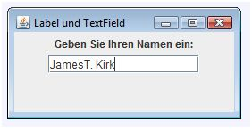

Antwort:

FlowLayout macht das Beste, was es kann und
stellt die Komponenten untereinander.
Wenn der Frame nicht breit genug ist,
wird das Textfeld abgeschnitten.
FlowLayout macht das Beste, was es kann und
stellt die Komponenten untereinander.
Wenn der Frame nicht breit genug ist,
wird das Textfeld abgeschnitten.
JTextField
Ein JTextField ist eine Swingkomponente,
also muss es dafür ein Listener-Objekt geben,
damit es für das Programm nützlich ist.
Nachdem der Text eingeben wurde,
drückt der Anwender die Eingabetaste.
Das erzeugt einen ActionEvent,
genauso wie beim Klicken auf einen Button.
Der Listener muss den Text bekommen
und etwas damit tun.
Um Text von einem Textfeld zu bekommen,
verwenden Sie die String getText()
Um Text in ein Textfeld zu stellen,
verwenden Sie die setText(String text)
Welcher Typ von Listener wird für einen ActionEvent benötigt?